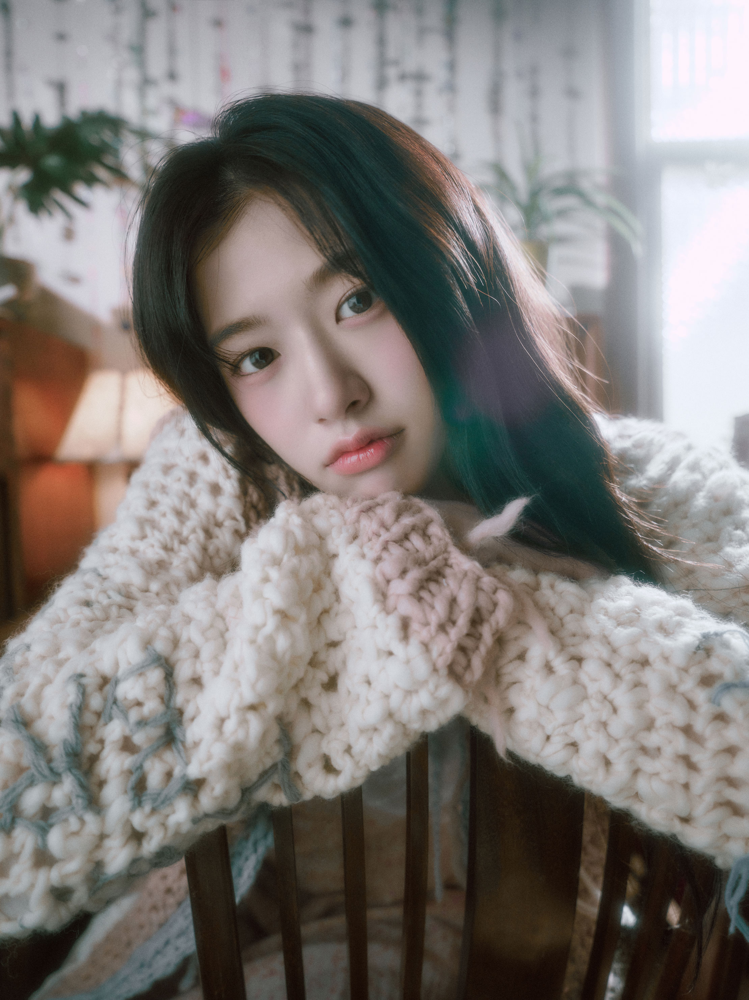
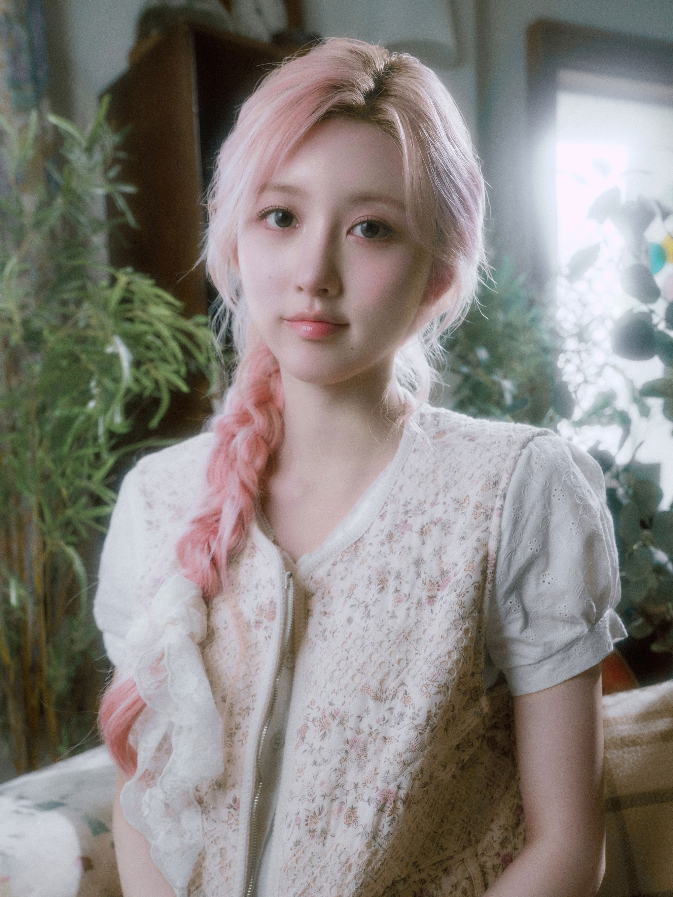
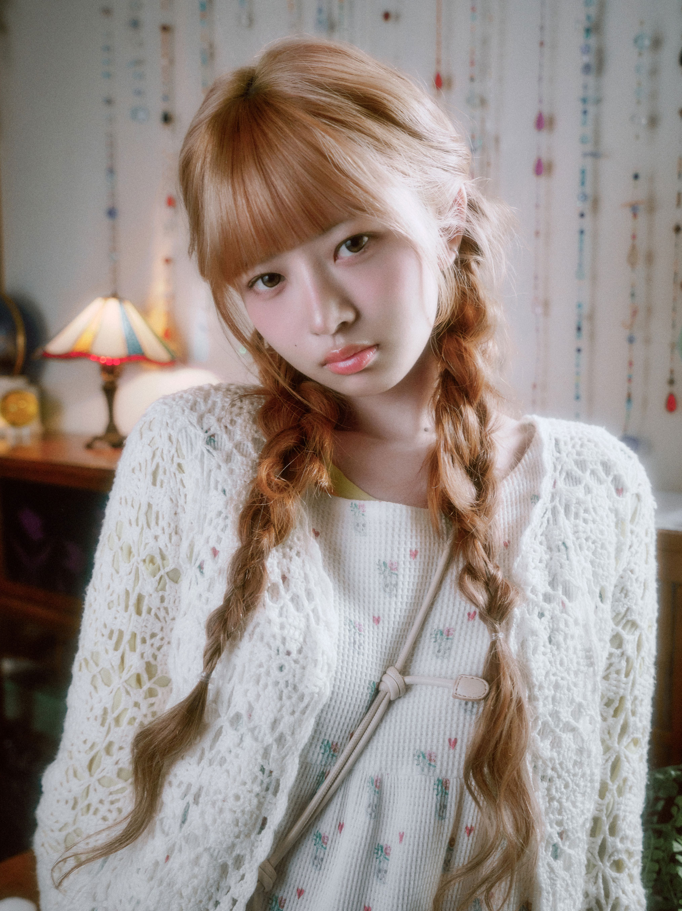
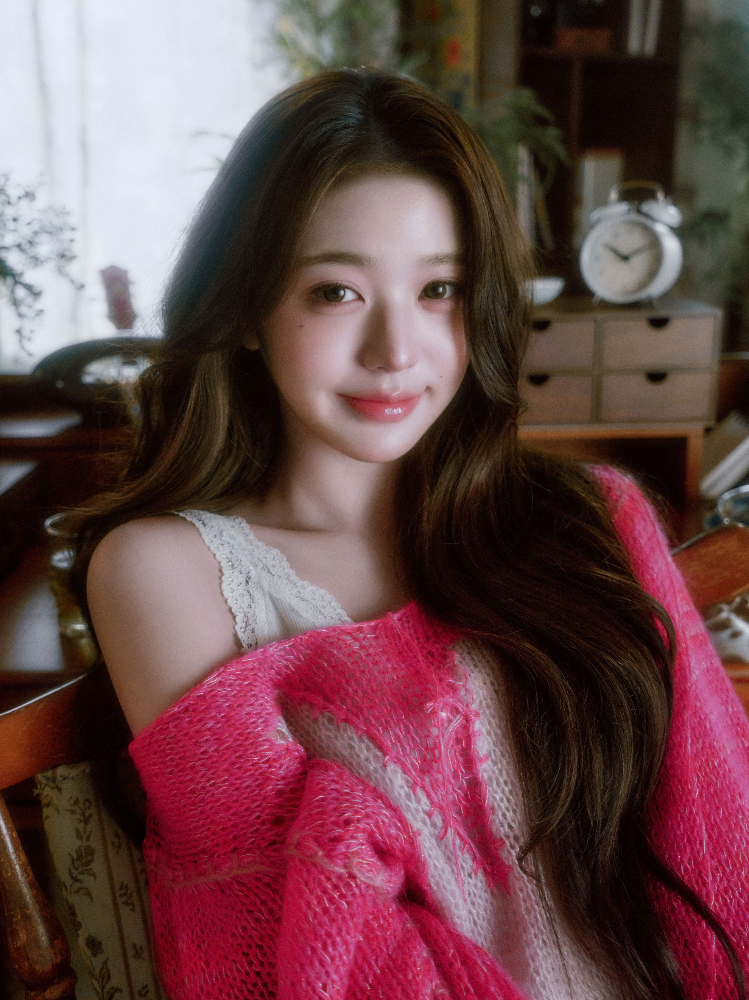
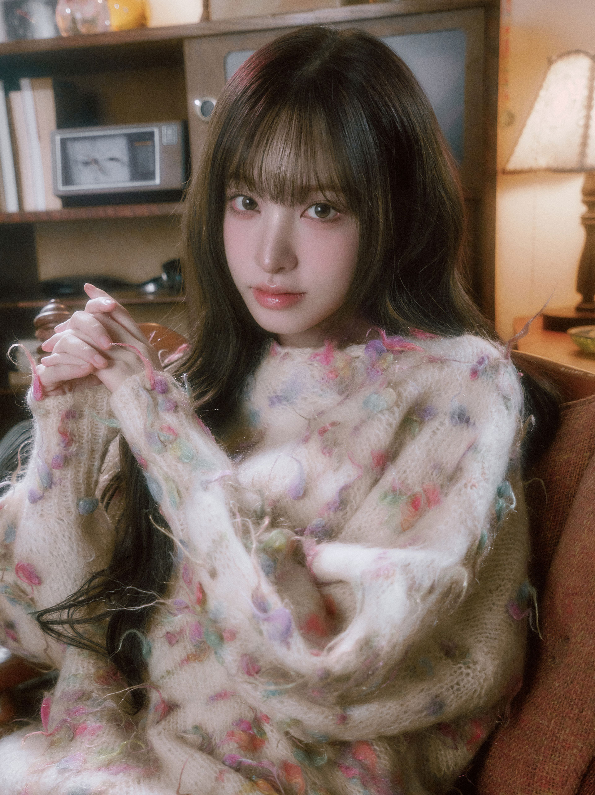
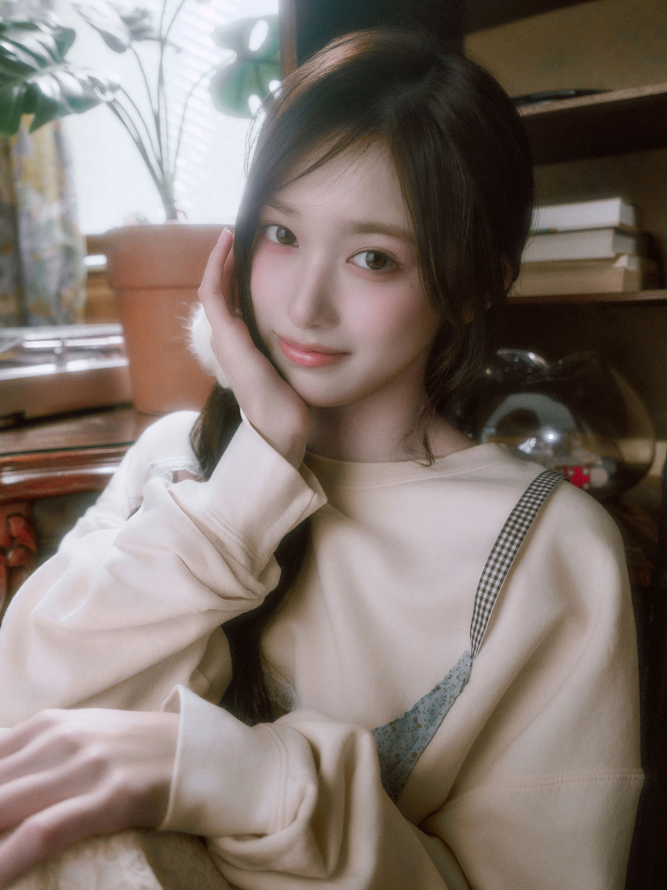

DIVE INTO IVE
Meet the members
六位成員，各自閃耀。
應援色說明：以下列出《After LIKE》時期常見的成員代表配色，方便辨識；不同作品會使用不同配色，不代表公司公布的永久個人應援色。隊內定位依官方介紹，沒有另加「主唱」「主舞」等未統一公布的分級。

YUJIN
安兪真 · 안유진
生日：2003/09/01
國籍：韓國
應援／代表色：洋紅色（After LIKE 時期）
隊內定位：隊長、Vocal（演唱）

GAEUL
秋天 · 가을
生日：2002/09/24
國籍：韓國
應援／代表色：藍色（After LIKE 時期）
隊內定位：Rapper（饒舌）

REI
直井怜 · 레이
生日：2004/02/03
國籍：日本
應援／代表色：綠色（After LIKE 時期）
隊內定位：Rapper、Vocal（饒舌、演唱）

WONYOUNG
張員瑛 · 장원영
生日：2004/08/31
國籍：韓國
應援／代表色：紅色（After LIKE 時期）
隊內定位：Vocal（演唱）

LIZ
金志垣 · 리즈
生日：2004/11/21
國籍：韓國
應援／代表色：青色（After LIKE 時期）
隊內定位：Vocal（演唱）

LEESEO
李瑞 · 이서
生日：2007/02/21
國籍：韓國
應援／代表色：黃色（After LIKE 時期）
隊內定位：Vocal（演唱）；年紀最小的成員
生日、定位與照片：Sony Music 官方介紹。時期代表配色：IntipSeleb 成員配色整理。